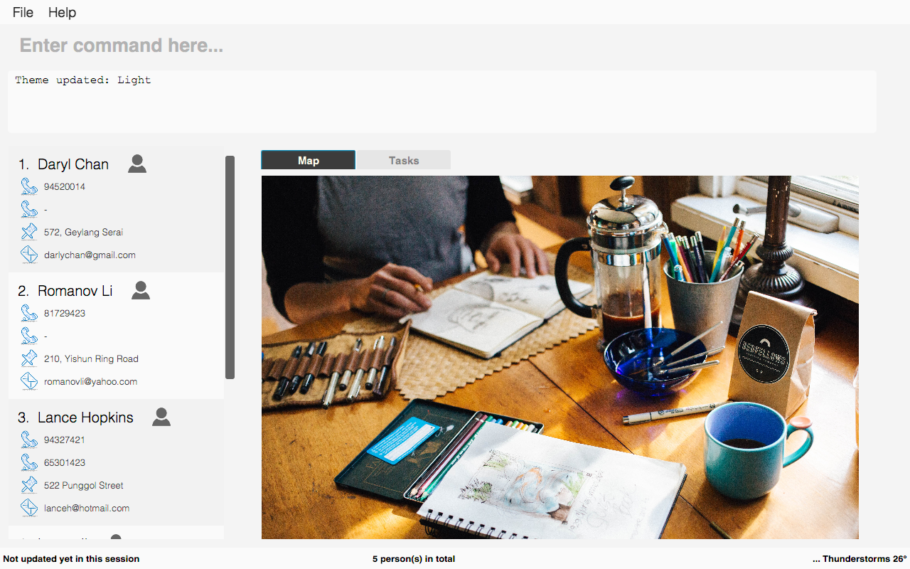

Project: Contact Plus
Contact Plus is a command-line based contact-managing application. This application allows you to manage your contact list on your computer. Also, Contact Plus can serve as a task managing application,
which allows you to record your upcoming appointments, events and tasks. We strive to provide comprehensive services for busy students as well as anyone who needs a contact-managing application.
The user interacts with this application using a CLI, and it has a GUI created with JavaFX. It is written in Java, and has about 6 kLoC.
Code contributed: [Functional code] [Test code]
Add tasks: task [Since v1.3]
This command enables you to record down your events, tasks or appointments on Contact Plus as your personal reminder.
Command Format: task d/DESCRIPTION pr/PRIORITY(0/1/2) on DUE DATE(dd/MM/yyyy)
Description
-
Task descriptions should only contain alphanumeric characters and spaces, and it should be not blank.
-
Prefix for task descriptions is
d/. -
Task priority should only be number 0 (lowest priority), 1 or 2 (highest priority).
-
Prefix for task priority is
pr/. -
Task due date should be a valid date following the format dd/MM/yyyy.
-
Prefix for due date is
on(Do not forget the SPACE before the date). -
If you input any invalid format, there will be a Use Message together with an example to guide you.

-
Once the task is successfully added, it will be displayed on the sticky note under
Tasktab (as shown in the image below).
Examples:
-
task d/CS2103 Assignment pr/2 on 26/10/2017 -
task d/Finish Teammate Feedback Session pr/0 on 01/11/2017
End of Extract
Justification
The addtask feature allows users to manage their tasks within the address book application, instead of switching
between different apps. It offers a place for the to-do list to be stored, managed and organised. This feature will
not do your tasks for you, but it is powerful enough to get you started.
Once the task is successfully added, it will be displayed on the sticky note in the Task tab, as shown below:
Add Task Mechanism
The 'add task' feature is facilitated by AddTaskCommand class. It allows users to add tasks into the address book
with a description, the level of priority as well as the due date. The tasks added will be shown on the stickies
in the address book.
The command word for adding a task is task. When users key in the command word task, together with valid
description, priority and due date, the execute() function in the LogicManager class will be called, which will
pass the value of the command string into parseCommand() function in the AddressBookParser class.
As a result, AddTaskCommandParser will be returned to separate the command string into three different parts
- Description, Priority and dueDate. These three fields will be passed to Task class to check if they
are valid. If yes, a new Task object will be returned and used to call AddTaskCommand class. Eventually,
the executeUndoableCommand() function in AddTaskCommand class will be called and returns a CommandResult object to display once a task is successfully added.
Prerequisites/Dependencies
-
The format of date must follow
dd/MM/yyyy. -
The date must also be a valid date.
-
The range of priority can only be from 0 to 2. Any other values will be deemed as invalid, and an error message will be thrown.
-
Currently, all fields must be included in the command and cannot be omitted.
Design Considerations
Aspect: Implementation of AddTaskCommand
Alternative 1 (current choice): Use stickies so that newly added tasks will show up in the stickies.
Pros: Tasks are easy to identify.
Cons: When too many tasks are added, it is difficult to display all the tasks.
Alternative 2: Use a task list similar to the person list in the address book.
Pros: Easy to display and look through all the tasks.
Cons: Less attractive.
End of Extract
Switch theme [Since v1.5]
If you are not happy with the current theme and want to select a new theme, use switch command with the index to
switch to the theme you like.
Command Format: switch INDEX
Quick demo: here
Description
-
INDEX must be 1, 2 or 3 only. Other values are deemed as invalid.
-
The command is not undoable. But you can switch back to the original theme by performing the command again.
-
Once you update the theme, your preference will be saved. The next time you open Contact Plus, it will not set back to default theme.
-
Default themes in Contact Plus are Dark, Light and Colourful. Below are the preview of 3 themes:

Dark Theme

Light Theme

Colourful Theme
How to use
-
Enter the command
switch, together with INDEX of the theme. (1stands for Dark Theme,2stands for Light Theme and3stands for Colourful Theme) -
Once the command is successfully executed, the theme of Contact Plus will be updated immediately.
Example
Your input |
Result |
|
|
End of Extract
Justification
The select theme feature allows users to choose their favourite theme from the default set of themes available.
It allows users to have a more personalised address book.
After a theme is selected, the user interface will be updated immediately. For instance, after switching to Light Theme, the following result will be displayed.
Theme Selection Mechanism
The 'theme support' feature allows user to choose their favorite theme for the address book, other than the default
Dark Theme. It is facilitated by SwitchThemeCommand class.
Currently, Contact Plus is presented with three themes: Dark(INDEX 1), Light(INDEX 2) and
Colourful(INDEX 3).
The command word for switching theme is switch. When the user type the command word switch and the INDEX
of theme, execute() function in the LogicManager class will be called. Next the command line will be passed to
AddressBookParser class which then returns SwitchThemeCommandParser to separate the INDEX from command word.
The INDEX will be used to select the specific theme in the array of String themeArr. The theme selected
will be used to build the filepath, which allows MainWindow class to retrieve the respective .css file and update
theme accordingly.
The overview of the themes is as follows:
1 Dark Theme |
|
2 Light Theme |
|
3 Colourful Theme |
|
Prerequisites/Dependencies
-
The line
<URL value="@ThemeName.css" />infxmlfiles is replaced by a method call viajavafx.scene.layout.VBoxobject inMainWindowclass. -
In current version of Contact Plus, the
INDEXmust be 1, 2, or 3. -
The
SwitchThemeCommandis currently not undoable.
Design Considerations
Aspect: Implementation of switch theme feature
Alternative 1 (current choice): Use command line to switch theme.
Pros: Only keyboard action is required. Users do not need to use mouse to click.
Cons: Preview of theme is not available. Users will only find out after they execute the command.
Alternative 2: Use a selection window with theme preview image.
Pros: Users are able to know what the theme looks like before they choose the respective theme.
Cons: Additional space for Theme Selection window.
End of Extract
Enhancement Proposed: command sync
Sync command allows you to sync your local contact lists with Google Contacts and save your changes online.
Format: sync all or sync 1/2/3 or sync 1
Implementation
-
After the command word
syncis typed,execute()function inLogicManagerwill be called. -
The command line will be passed to
AddressBookParserwhich returnsSyncCommandParser, and subsequently aSyncCommandobject. -
The command will post an event to the
EventCenter, which is handled by anOAuthclass. -
The
OAuthclass is used to request for authorisations and interact with Google Contacts. -
An instance will be created to perform relevant actions on Google Contacts and sync the contact list.
Outcome
You are able to see your contact list being uploaded to Google Contacts successfully.
Other contributions
-
Modify browser panel to display Google Map of the address of selected contact. (Pull requests #56)
-
Create two new themes - Light and Colourful. (Pull requests #56, #174)
-
Update status bar to display the total number of people. (Pull requests #30)
-
Wrote additional tests to increase coverage from 82% to 84%. (Pull requests #142)
-
Report bugs in other team’s product. (Issue 90)